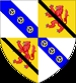

751118 Lord Walter Leslie of Leslie
Lord av Ross. Blev ca 72 år.

Far:
Mor:
Född:
omkring 1310 Leslie Castle, Aberdeenshire, Scotland. [1]
Död:
1382-02-27 Pearth, Pearthshire, Scotland. [1]
Barn:
Personhistoria
1310?
Födelse omkring 1310 Leslie Castle, Aberdeenshire, Scotland
[1]
1382
Död 1382-02-27 Pearth, Pearthshire, Scotland
[1]
Källor